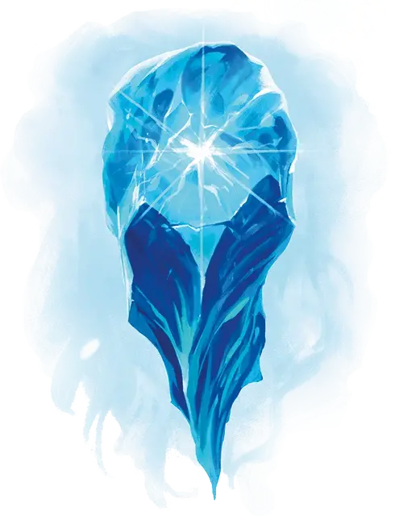

Ориль (Третья форма)
Auril (Third Form)
Маленький Элементаль, нейтрально-злой, именной НИП

Класс Доспеха 19 (природный доспех)
Хиты 136 (16к6 + 80)
Скорость летая 30 футов (парит)
| мод | спас | ||
|---|---|---|---|
| СИЛ | 1 | −5 | −5 |
| ЛОВ | 12 | +1 | +1 |
| ТЕЛ | 21 | +5 | +9 |
| мод | спас | ||
|---|---|---|---|
| ИНТ | 24 | +7 | +7 |
| МДР | 26 | +8 | +12 |
| ХАР | 28 | +9 | +9 |
Навыки Восприятие +16, Запугивание +13, Обман +13, Проницательность +12
Уязвимость к урону звук
Иммунитет к урону холод, яд
Иммунитет к состояниям испуг, истощение, окаменение, отравление, очарование, ошеломление, паралич
Чувства истинное зрение 120 футов, тёмное зрение 120 футов, пассивное Восприятие 26
Языки Все, Телепатия 1000 фт.
Опасность 11 (7200 опыта)
Бонус мастерства +4
Особенности
Божественная сущность. Ориль нельзя застать врасплох, и её облик нельзя преобразовать в другой против её воли.
Божественное восстановление. Когда хиты Ориль опускаются до 0, её кристаллическая форма разрушается и божественная искра исчезает. Она мертва до следующего зимнего солнцестояния, при котором она вновь возрождается со всеми хитами в холодном, удалённом от поселений месте по своему выбору.
Морозящая аура. Пока у Ориль остаётся хотя бы 1 хит, каждое существо в пределах 10 футов о неё получает 10 урона холодом в начале каждого хода Ориль.
Легендарное сопротивление (1/день в этой форме). Если Ориль проваливает спасбросок, она может вместо этого сделать спасбросок успешным.
Сопротивление магии. Ориль совершает с преимуществом спасброски от заклинаний и прочих магических эффектов.
Необычная природа. Ориль не нуждается в воздухе, питье, еде и сне.
Действия
Мультиатака. Ориль совершает две атаки полярным лучом.
Полярный луч. Дальнобойная атака заклинанием: +13 к попаданию, дистанция 120 фт., одна цель. Попадание: 14 (4к6) урона холодом.
Пелена вьюги. Ориль создаёт 30-футовую сферу магической вьюги с центром на себе. Пространство внутри сферы сильно заслонено, и сфера движется вместе с Ориль. Эффект действует до тех пор, пока хиты Ориль не опустятся до 0, пока она сама не решит окончить эффект (действие не требуется) или пока она не потеряет концентрацию (подобно концентрации при заклинании).
Легендарные действия
Ориль может совершить 3 легендарных действия, выбирая из представленных ниже вариантов. За один раз можно использовать только одно легендарное действие, и только в конце хода другого существа. Ориль восстанавливает использованные легендарные действия в начале своего хода.
Полярный луч. Ориль использует полярный луч.
Усиление ауры (стоит 2 действия). Морозящая аура Ориль причиняет дополнительно 10 урона холодом до конца её следующего хода.
Ослепляющая вспышка (стоит 2 действия). Ориль образует блики ярко-синего света. Каждое существо, которое может видеть Ориль и находится в пределах 10 футов от неё должно преуспеть в спасброске Мудрости Сл 17, иначе будет ослеплено вспышкой Ориль на 1 минуту. Ослепленное существо может повторять спасбросок в конце каждого своего хода, оканчивая действие эффекта на себе при успехе
Логово
Ориль находится на острове Солнцестояния, замерзшем и скрытом среди титанических айсбергов в море Движущегося Льда. Немногие существа знают о нём, не говоря уже о том, как до него добраться.
В главе 5 находится информация о местных эффектах действующих на острове.
Действия логова
Пока Морозная Дева находится на острове, она может совершить одно из следующих действий логова при значении инициативы «20» (в случае ничьей проигрывает всем конкурентам):
• Ориль мгновенно узнает о местонахождении и состоянии здоровья всех других существ на острове. Она знает какое количество урона получило каждое из этих существ, сколько у них степеней истощения и в каких состояниях они находятся на данный момент.
• Ориль мгновенно телепортируется в любое место на острове. Если целевое пространство уже занято, Ориль появляется в ближайшем к нему свободном пространстве.
• Ориль может телепатически общаться с любым количеством существ одновременно при условии, что все они находятся на острове. Этот эффект длится до тех пор, пока Ориль не перестанет концентрироваться на нем (как при концентрации на заклинании), пока она не покинет остров или не использует другое действие логова.
Описание
Три формы Ориль
В своем нынешнем ослабленном состоянии Ориль может принять три различные формы. Чтобы уничтожить ее, персонажи должны уменьшить хиты каждой из ее форм до 0, одну за другой. После того, как Ориль потерпит поражение в своей третьей и последней форме, она умирает. Однако, пока у неё есть поклоняющиеся ей смертные последователи, Ориль возродится с полными силами во время следующего зимнего солнцестояния с божественной мощью, намного превосходящей той которая отражена в представленных здесь блоках статистики. После продолжительного отдыха Ориль восстанавливает все свои уничтоженные формы, при условии, что хотя бы одна из форм выжила. Когда она переходит из одной формы в другую, она теряет все черты и действия старой формы и приобретает особенности и действия новой. Блоки статистики для каждой из трех форм Ориль представлены по отдельности. Эти описания не отражают полную мощь Ориль, а показывают Ориль в том виде, в каком она встречается в этом приключении.
Третья форма
Третья форма Ориль, которую ее самые верные последователи называли Чрево Зимы или Царица Ледяных Слез, представляет собой ледяной бриллиант диаметром 3 фута, содержащий божественную искру. Бриллиант огранен и имеет острие внизу. Он парит в воздухе, излучая сильный холод вокруг себя. Когда Ориль говорит, ее голос, словно, исходит из сердца бриллианта.
Если Ориль будет убита в своей третьей и последней форме, она умирает до следующего зимнего солнцестояния. Пока она мертва, её смертные последователи теряют дарованные ею заклинания и способности.
Ориль Морозная Дева — нейтрально-злое меньшее божество. ледяного безразличия, олицетворяющее жестокость зимы.
Ориль желает заключить в объятья льда всё несущее хоть какую-то ценность, оберегая эти вещи от разрушительного воздействия времени. Она сохраняет красоту во всех её проявлениях, от предметов искусства и цветов до искусных ремесленников и
их чудесных работ, замораживая их в волшебном льду для своего удовольствия.
Ориль была связана с Талосом, Амберли и Маларом. Вместе они несли миру ужасные разрушения, внушая страх, заставлявший нести подношения, чтобы сдерживать их силу. Амберли, королева бушующих морей, всегда презирала постоянство природы льда и снега, созданных Ориль и вскипела, когда холод Ориль превратил хаотичные, непредсказуемые приливы в жесткие, неподвижные ледяные покровы. Заключив союз с Талосом и Маларом, они вынудили Ориль отступить в самый холодный уголок Торила, спасаясь от их ярости.
После потрясшего мир события, известного как Раскол, большинство богов покинуло Торил, предоставив смертным самим распоряжаться своими судьбами без божественного вмешательства, но Морозная Дева не смогла долго оставаться в стороне. Ориль вернулась в свое ледяное царство на крайнем севере и через некоторое время, используя свою магию, погрузила его в ледяную тьму.
Творя такую великую магию ночь за ночью, одновременно даруя заклинания своим преданным последователям, Ориль стала слабой и уязвимой. В своем ослабленном состоянии, Ориль склонна быть более осторожной и избегает контактов с другими существами, которые могут причинить ей вред.
Последователи Ориль понимают, что лучше не нарушать ее добровольную изоляцию. Ужасные метели отрезали долину Ледяного Ветра от остального мира, и пелена тумана скрывает ото всех ее остров в море Движущегося Льда.
Отыгрыш Ориль
Отыгрыш божества, даже меньшего бога, как Ориль, может быть непростым. Для отыгрыша вам могут помочь следующие предложения:
- Пока у Ориль есть последователи среди смертных, она не может по-настоящему умереть (хотя персонажи могут избавить мир от неё на время). Из-за этого у неё нет причин уступать требованиям смертных. Как олицетворение жестокости зимы, она не способна проявлять ни милосердие, ни сострадание. Изобразите ее в высшей степени холодным и бесчувственным существом.
- Пусть Ориль говорит только тогда, когда это необходимо. Чем меньше она говорит, тем меньше у вас риска непреднамеренно снять завесу её таинственности в глазах ваших игроков. Пусть за неё говорят действия, а не слова.
- Меньшие боги в мультивселенной D&D чрезвычайно могущественны и высокомерны, но они также подвержены ошибкам и слепы к своим собственным недостаткам. Для Ориль уместно вести себя так, как будто она непобедима, недооценивая своих врагов, даже в своём нынешнем ослабленном состоянии.